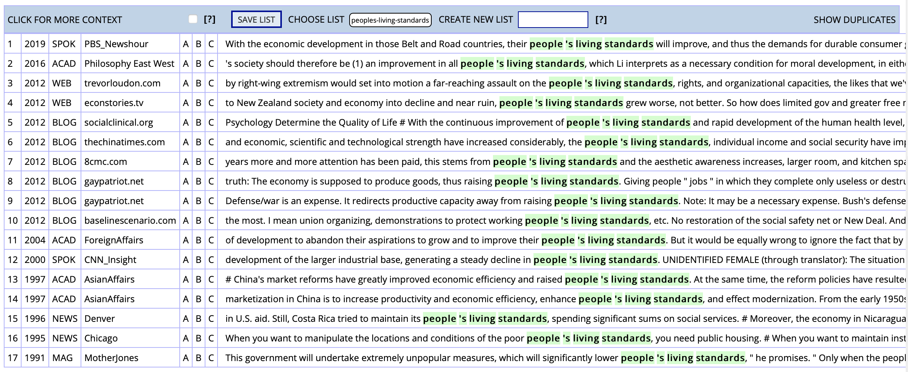

读书｜打倒外国人口中的「中式英语」！
有天一早，看见群里正如火如荼地批判「中式英语」。仔细一看，原来是这么一句：
CN: 人民生活水平、居民收入水平、社会保障水平迈上一个大台阶。
EN: The people’s living standards, individual income and social security have improved significantly.
有人说，这句中的加粗部分不对，是「中式英语」，理据见《中式英语之鉴》（下简称《中》）：
A: living standards for the people in both urban and rural areas continued to rise.
B: living standards in both urban and rural areas continued to rise.
[The notion of living standards applies only to people.]
（Pinkham, 2000:3）
《中》是本好书，之前我也推荐过。【链接】但群里的矛头指向「living standard for the people」是中式英语，让我着实有点费解，因为与之性质相同的表达「people’s living standard」我也常用，从没想到自己居然犯了这么大的错误。出于对自己能力的不信任，我上网搜了一下，不搜不知道，一搜吓一跳，这个世界，竟被「中式英语」悄悄占领了！
The coronavirus crisis will wreak “lasting damage” on people’s living standards across the world and taxes on the rich and on companies may have to rise to address this economic harm, the IMF has warned.
Pandemic will cause ‘lasting damage’ to living standards, IMF warns
The Poverty and Social Exclusion explores poverty by directly examining people’s living standards and provides full details of the PSE UK research project.
High cost of living adds pressure to people’s living standards, which may in turn impact on their wellbeing. This indicator will measure cost of living in the ACT via the Consumer Price Index, reporting on changes in the price level of a range of consumer goods and services.
[…]
In May 2011 Treasury released a working paper outlining what it meant by living standards in its vision “working for higher living standards for New Zealanders”. … High inflation is costly for the economy, increasing economic uncertainty and lowering people’s living standards by undermining the value of their purchasing power. There is a broad range of factors that impact on inflation including monetary, regulatory policy, market structures and fiscal policy.
Income inequality has long been an important issue in welfare economics. However, solely looking at income tells only part of the story about the differences in people’s living standards because income does not reveal information about the cost of living, i.e., the actual purchasing power of a person’s income.
Income and Living Standards within the Eighth District
看看这出处，不光是 Financial Times，就连五眼联盟，都有四只眼造反了！再一看 COCA，居然 Foreign Affairs、CNN 都跳反了！

这样怎么能行！我们要站起来，联合一切可以联合的朋友，共同抗击「中式英语」！
玩笑归玩笑。《中》为何在这个问题上「翻了车」？要想解决这个问题，先要回顾《中》成书年代，中国英语使用者，特别是翻译人员的（可以料想的）语言、翻译水平。这本书成书是 1999 年，那时的中国互联网尚未普及，语文课本上还有《我家跨上了信息高速路》这篇课文，向大家介绍什么是互联网。除此之外，获取外国原版刊物更是几无可能。这种种困难，注定了那是的翻译人员，几乎没有合适的资源，确定自己的翻译是否地道。
此外，彼时专业翻译的教学、培养虽说不是白纸一张，但也只是刚刚起步，「小词典」式翻译方法，恐怕还是最常见的套路，故而「逢词必译」恐怕是再常见不过的常态。但正所谓「过犹不及」，中英文差别甚大，把中文的每个词都逐一翻出，自然不可能得出地道的英文。《中》开篇就讲赘词（unnecessary words），在「赘名词」下指出，这些词之所以成为赘词，是因为「their sense is already included or implied in some other element of the sentence」（3）。如书中给出的例句，「in both urban and rural areas」，也即「城乡」，本就是以「人的居住地」为视角进行的划分，自然包括了「人」的要素在内，故不需在强调「人」，for the people 也就成了赘词。
但话虽如此，现在这些用 people’s 的例子又该如何解释？仔细观察不难发现，这几个句子都有其特殊性，用 people’s 效果更好。
- 上述几个句子中，有的句子前文用了 people’s，后文一定会对 people’s 有所指称。
- 如「High inflation is costly for the economy, increasing economic uncertainty and lowering people’s living standards by undermining the value of their purchasing power. 」「High cost of living adds pressure to people’s living standards, which may in turn impact on their wellbeing.」两句中，their 就是对 people’s 的指称；
- 「However, solely looking at income tells only part of the story about the differences in people’s living standards because income does not reveal information about the cost of living, i.e., the actual purchasing power of a person’s income.」一句中，后文 person’s 是对前文 people’s 的呼应。
- 添加 people’s 也能理顺句子气息，让句子更易读、更美观。
- 如「The Poverty and Social Exclusion explores poverty by directly examining people’s living standards and provides full details of the PSE UK research project.」如果摘掉 people’s，那句子就成了「examining living standards」，两个现在分词连用，读起来、看起来都不够美观舒适，加上有助于调整节奏。
而《中》在很大程度上，反映的只是作者自身的语言观、翻译观和用语习惯，难以体现英语使用的全貌。上面的分析也能看出，别人指出的「赘词」，其实未必赘余，有时反而有其功用。若完全按照书本所写，按图索骥，那才是成了「死读书，读死书」的典范。作者自己在前言中就写道：「Translation is not a science but a craft（但这句话仍值得商榷）, and craftsmen in any field may have different opinions as to the best solution to a given technical problem.」条条大路通罗马，若是在去往罗马的路上，无视文体、上下文对文字风格的要求，矫枉过正，到的可能也就是个假罗马。在其他与之类似的问题上，例如「简明英语」（plain English）的使用，也需要注意类似的原则：「These are hints, not rules, and when applying them you should take account of your target readers and the purpose of your document.」
再倒回头，开头提到的那句话，真的就金身不破吗？这里我不具体阐述，只提几个点，请大家各自思考，各自决定。
- 这篇文字的出处是？这不是问出自哪本翻译教材，而是原文原始的出处。这个问题之所以重要，是因为搞懂了出处，就搞懂了作者，因而能搞懂目标读者和文体文风，对做出取舍是非常重要的参考标准。
- 「人民」和「居民」如果按照《中》的观点，意思一致，能否合并？这就体现出如何理解原文中「人民」这个词。要知道，在中文语境下，「人民」是一个政治概念，有其政治意涵，这从前面带的定冠词就能看出。
- 句中说三个东西「迈上一个大台阶」，用了并列句式，但这三个东西能并列吗？这考察的是如何理解生活水平、居民收入和社会保障三者的关系。有没有可能第一个元素包括后两者？还是只是单纯的并列？还是差别太大，放到一个句子里本就不合适？这几个问题的答案又该以什么为依据去判定？
当然，对于这一句话，还能提出其他疑问。这些疑问也只是用于启发，并不是说我用了反问，答案就一定反着来。至于答案到底如何，就请各位慢慢思考吧。
欢迎将您的想法、评论、意见、建议发送至 harveyjanson@icloud.com，请注明「讨论」字样，我会尽量回复。
读书｜打倒外国人口中的「中式英语」！
http://harveyjanson.github.io/2020/12/12/2020-12-12-chinglish/